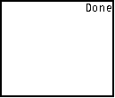

| HOME >> Tutorials >> Tutorial 1: Clearing the Screen |
Introduction:
In this tutorial, we will make our first program that just clears the screen. Yes, you could easily just press the clear button while in the home screen, but this is the first step in compiling a program/game. First, we'll start from the beginning because I do not know how much you know about programming or using your calculator. I will first show how to make a new program on your calc. Please note that these instructions and the picture are taken directly from the "TI-83 Graphing Calculator Guidebook."
To make a new program on your calc:
New Commands:
| : (colon) | Used at the beginning of a program so that it can be displayed in certain shells |
| ClrHome | Clears the home screen during program execution |
The Code:
For you to be able to see the home screen actually being cleared, you probably should just do some math calculations first on the home screen so that the screen is filled with different characters.
| : | For AShell, SOS, and TI-Explorer |
| ClrHome | Clears the home screen |

Conclusion:
Well this is your first program. It isn't much, but it's a good start. In the next tutorial we'll learn about displaying text.
If you do not understand a particular part in this lesson, have suggestions, or find any problems please contact me.
 |
 |
| Overview v1.0 | Tutorial 2 |